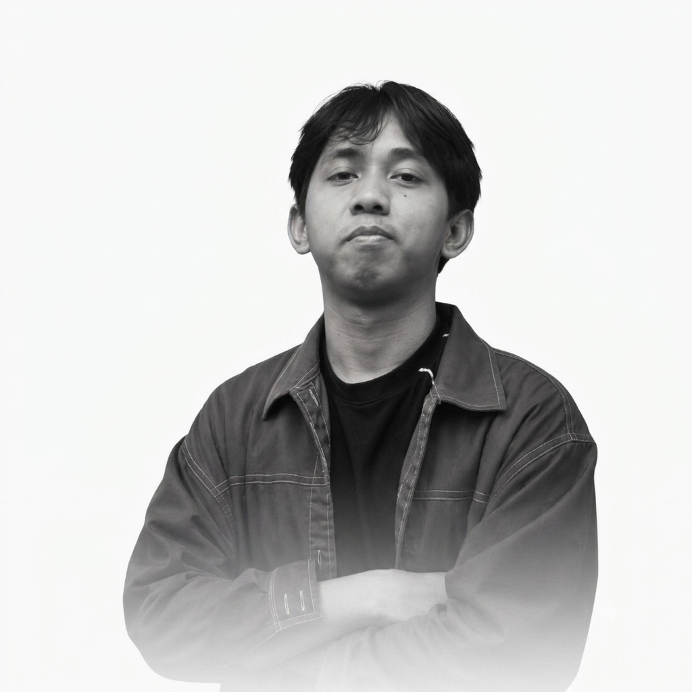

My Portfolio
Halo, saya Owen. Seorang Junior Programmer | IT Infrastructure Engineer.
Fresh Graduate Teknologi Informasi dengan pengalaman sebagai Junior Programmer. Memiliki pemahaman dalam pengembangan aplikasi, infrastruktur TI, jaringan komputer, dan troubleshooting perangkat keras maupun perangkat lunak.
Keahlian Utama
01 / Development
HTML, CSS, JavaScript, PHP (Laravel).
02 / Network
Mikrotik, Cisco.
Proyek Pilihan
Beberapa pekerjaan yang telah saya selesaikan.
Enterprise Resource Planning
2024Berkontribusi dalam pengembangan dan maintenance sistem ERP berbasis web menggunakan PHP (Laravel), HTML, CSS, JavaScript, dan MySQL. Menyelesaikan program magang dengan nilai rata-rata 83,84 serta menunjukkan kemampuan adaptasi dan kerja sama tim yang baik.
PT Bryan Rekayasa Teknologi • Junior Programmer
Sertifikasi Profesional
Kredensial dan sertifikat kompetensi yang saya miliki.
Mari Terhubung
Saya selalu terbuka untuk kolaborasi, proyek baru, atau sekadar berdiskusi tentang industri digital.